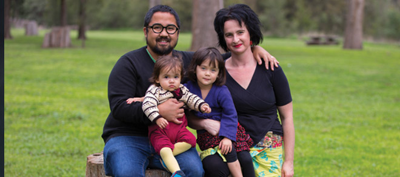

Ginger's story
Ginger Gorman
In 2007, Ginger Gorman was about to give up her job as a successful journalist to travel the world. A few weeks later, she was diagnosed with thyroid cancer and her life changed forever.
In 2007 I nearly died twice. It was a time of flux in my life. I had a job offer overseas so I bought a ticket to Spain and a new suitcase. Two weeks before I was to leave, a colleague noticed a lump on my neck. After visiting my GP and a shortly after getting biopsy of the lump, I was told I had thyroid cancer. I was shattered. My surgical oncologist Dr Peter Barry said that without surgery I would have just 18 months to live. In July 2007, Dr Barry removed my cancerous thyroid. As I emerged from the anesthetic Dr Barry was holding my hand and talking. “It’s gone,” he said, “everything is fine. You are fine.”
But within 48 hours, I stopped feeling my hands, feet, and face. I
had a severe drop in calcium - a complication of removing the
thyroid. The hospital’s duty doctor looked at me and yelled for
liquid calcium. There is no terror greater than hearing alarm in a
doctor’s voice. My life was saved for a second time. Six weeks
later I underwent radioactive iodine treatment. For three days I
sat alone, on a bed in a room with a yellow nuclear sign emblazoned
on the closed door. No one was allowed into my room and I wasn’t
allowed out. Eventually I was allowed out into the world again.
Waiting for my mother to collect me I started to cry and couldn’t
stop. What had happened seemed incomprehensively big. I was
small.Cancer touched me again in 2012 when my beloved father died
of aggressive prostate cancer - just 10 weeks before the birth of
our second daughter.
As I felt my baby get stronger and stronger, Dad’s limbs got weaker and weaker. In one of our last conversations he said: “I don’t believe in heaven, eternal life or being born again. Our only legacy is our children. ”During his illness and subsequent death, the Cancer Council gave our family enormous support.
On the upside, the cancer also gave me a husband. After my diagnosis, instead of flying overseas, I bought an apartment and chose a housemate. My housemate was a Filipino-Australian bloke with a warm face and a beard. He smiled easily, loved his family and loved to cook - a far cry from the men I usually dated.
Within a few months Don asked me to marry him.
We now have two beautiful little girls, five chickens and a giant vegetable patch. And we’re both very, very grateful for the life ahead of us.

Ginger Gorman is an award-winning 666 ABC Canberra presenter and producer. She has also worked for Triple J, Radio Netherlands Worldwide and Fairfax Community Newspapers.